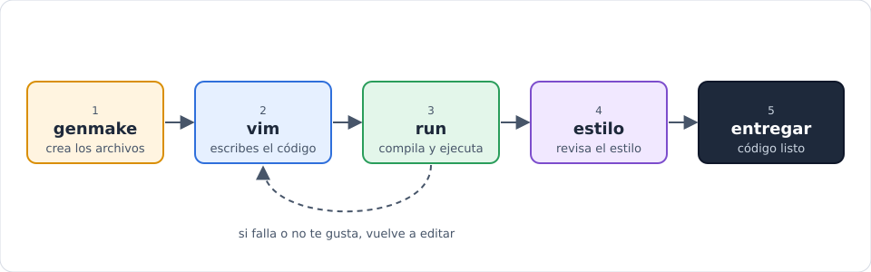
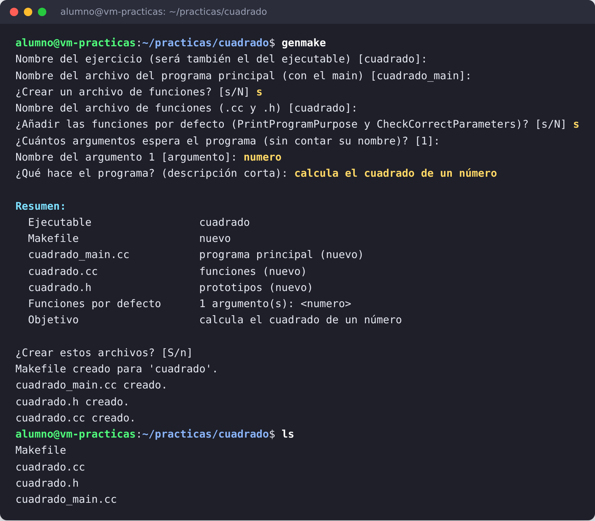
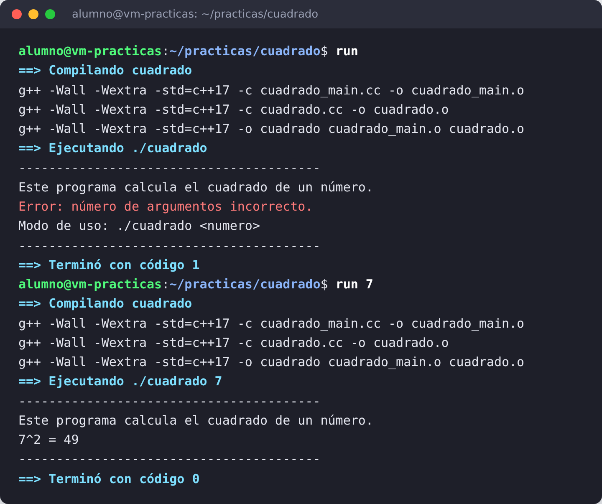

ib-tools
Menos trabajo repetitivo en las prácticas de C++: crea el ejercicio, compila, ejecuta y revisa el estilo con un comando.
Instalación
curl -fsSL https://raw.githubusercontent.com/Broslunas/ib-tools/main/install.sh | bashO con git clone https://github.com/Broslunas/ib-tools.git && cd ib-tools && ./install.sh. Te pregunta tu perfil (nombre, universidad, asignatura…) para la cabecera de tus archivos.
Comandos
nuevoCrea la carpeta del ejercicio y lanza genmake dentro.
genmakeMakefile, programa principal y funciones, preguntando paso a paso.
runRecompila desde cero y ejecuta. Si no compila, no ejecuta.
estiloGuía de Google (cpplint) y avisos del compilador.
-f corrige el formato.ib-configTu perfil: nombre, universidad, asignatura, idioma.
ib-updateActualiza a la última versión.
Flujo de trabajo

Así se ve


Documentación
Instalación · genmake · run · estilo · perfil y actualizaciones · problemas frecuentes